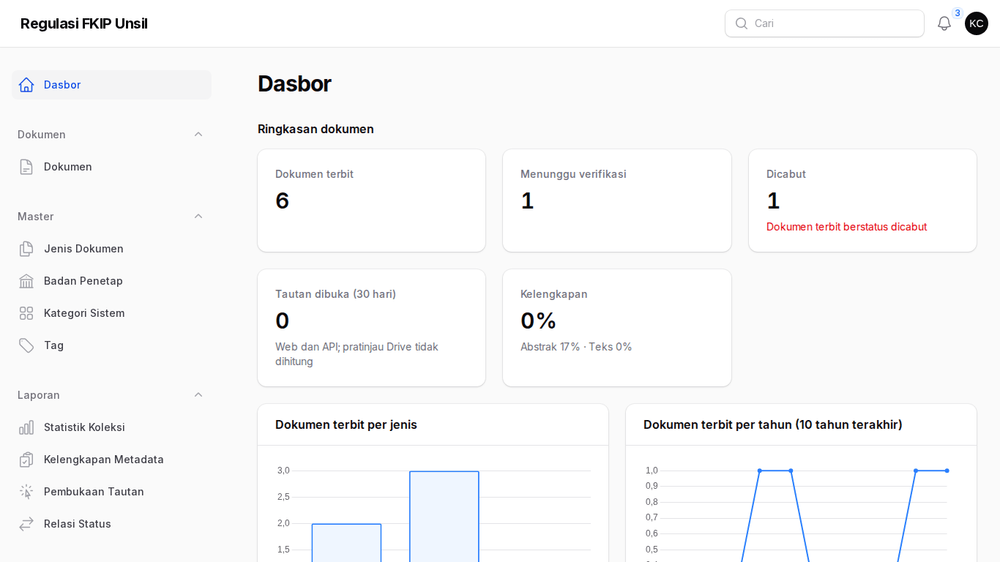
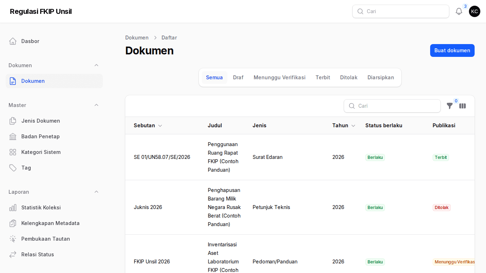
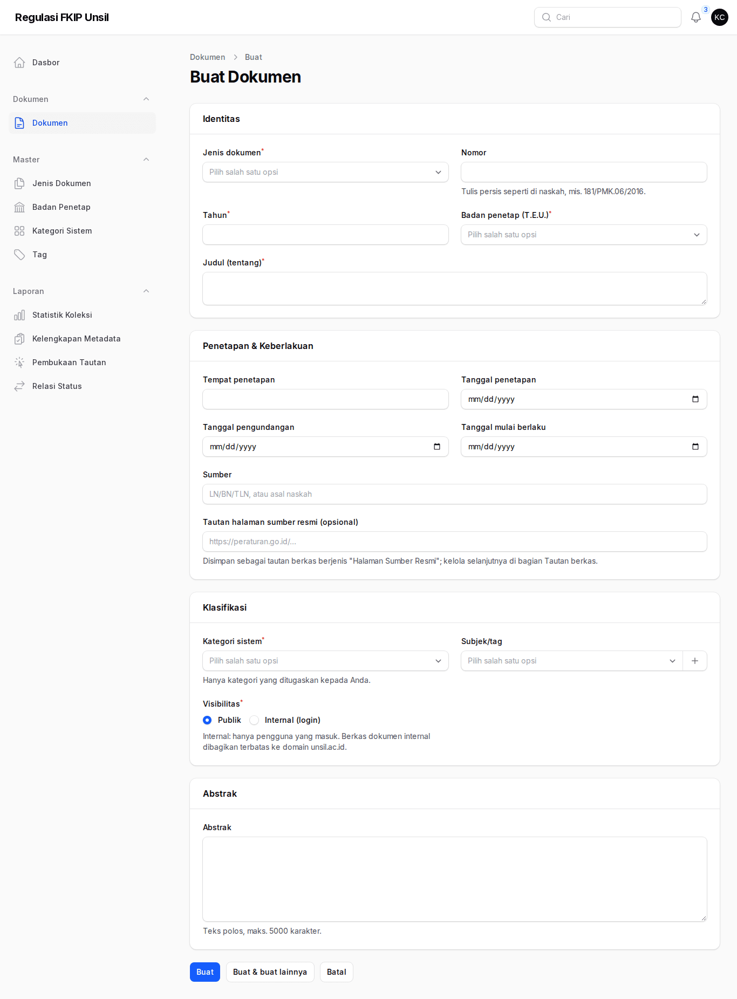
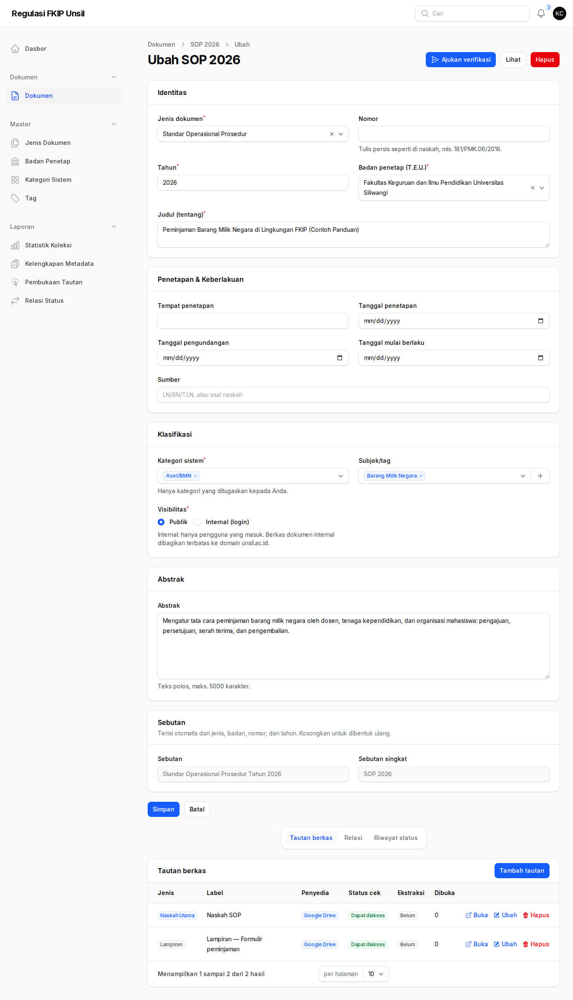
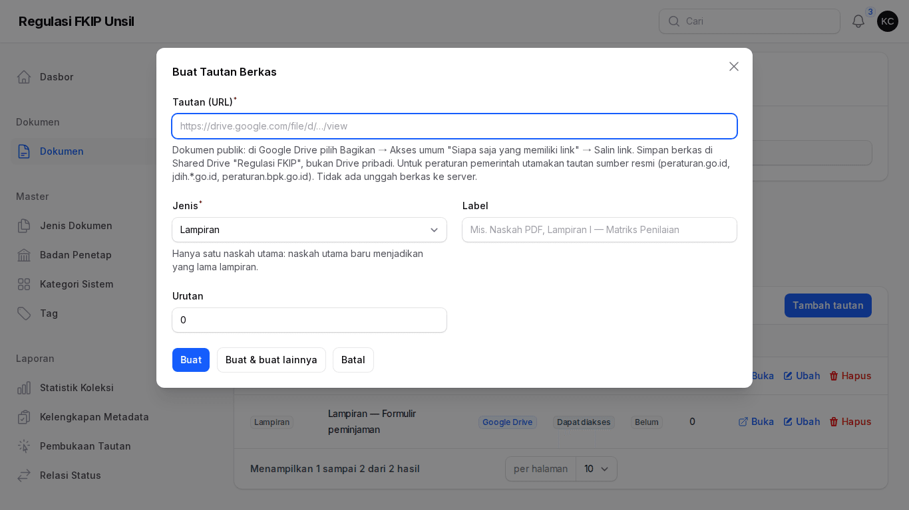
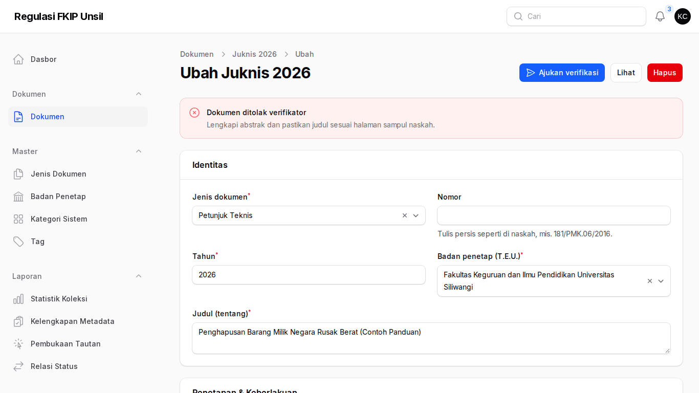
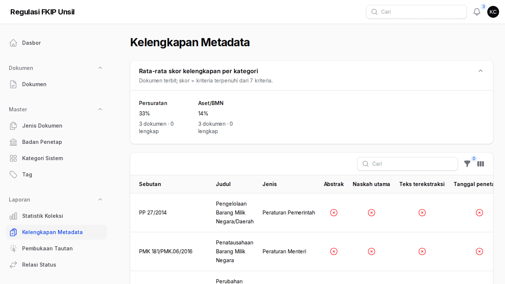

Panduan Kontributor
Tujuan peran: pengelola sistem/unit (mis. Aset/BMN, Persuratan) mengisi draf dokumen untuk kategori sistem yang ditugaskan, menempelkan tautan naskah, dan mengajukannya untuk diverifikasi admin regulasi. Kontributor tidak menerbitkan dan tidak mengubah dokumen yang sudah diajukan/terbit atau milik orang lain.
Cara masuk
Akun dibuat admin; tautan atur kata sandi dikirim ke surel Anda. Masuk di /regulasi/admin. MFA opsional (menu pengguna → Profil).
Langkah
- Dasbor
Angka dibatasi kategori Anda; tabel Draf & dokumen ditolak milik saya menunjukkan pekerjaan yang tertunda.
Dasbor kontributor - Daftar dokumen
Menu Dokumen hanya menampilkan dokumen kategori Anda. Klik Buat untuk draf baru.
Daftar dokumen - Isi metadata
Jenis; nomor persis seperti naskah (mis.181/PMK.06/2016); tahun; badan penetap (T.E.U., mis.Universitas Siliwangi. Fakultas Keguruan dan Ilmu Pendidikan); judul = teks setelah "tentang"; tanggal penetapan (wajib untuk peraturan/keputusan); sumber (mis. "Berita Negara RI Tahun 2016 Nomor 1745"); kategori; tag; visibilitas; abstrak teks polos 2–5 kalimat. Sebutan dan slug terisi otomatis.
Formulir dokumen - Tautan naskah (bukan unggah)
Simpan PDF di Shared Drive "Regulasi FKIP"; bagikan Siapa saja yang memiliki link (publik) atau Universitas Siliwangi (internal); salin link berkashttps://drive.google.com/file/d/…/view. Di bagian Tautan berkas klik Tambah tautan, pilih jenis Naskah Utama (satu per dokumen) atau Lampiran. Tautan folder, pemendek (bit.ly, s.id),http://, dan domain di luar daftar ditolak.
Halaman ubah draf 
Dialog tambah tautan - Ajukan verifikasi
Klik Ajukan verifikasi. Bila belum lengkap muncul daftar kekurangan. Setelah diajukan status menjadi Menunggu Verifikasi dan formulir terkunci. - Menanggapi penolakan
Anda menerima notifikasi (lonceng) dan surel. Kotak merah Dokumen ditolak verifikator berisi catatan; perbaiki lalu ajukan lagi.
Dokumen ditolak - Laporan kelengkapan
Periksa dokumen kategori Anda yang belum lengkap (abstrak, naskah, teks, tanggal).
Kelengkapan metadata
Tanya-jawab
- Kategori yang saya perlukan tidak tersedia?
- Minta admin regulasi menambah penugasan kategori.
- Ekstraksi berstatus "Tidak dapat diunduh"?
- Wajar untuk berkas yang dibagikan terbatas; pencarian memakai judul & abstrak. Lengkapi abstrak.
- Dokumen terbit perlu dikoreksi?
- Hubungi admin regulasi; kontributor tidak mengubah dokumen terbit.
- Ingin mencatat bahwa SK baru mencabut SK lama?
- Tulis usulan di Catatan internal; admin mencatat relasinya.
Kontak
Admin Regulasi FKIP (regulasi-fkip@unsil.ac.id) · Admin TI Fakultas untuk akun & MFA